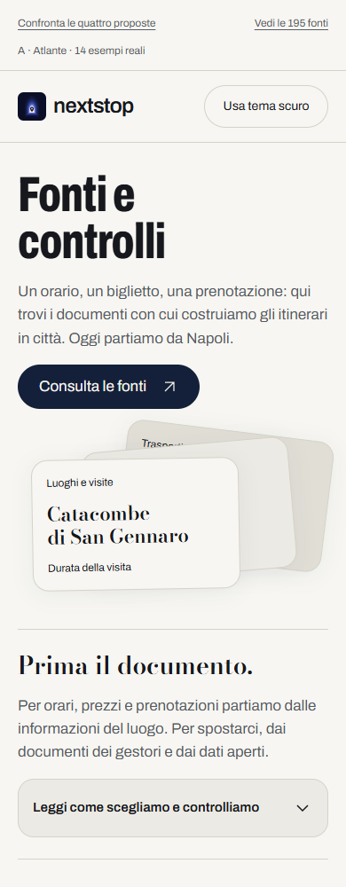
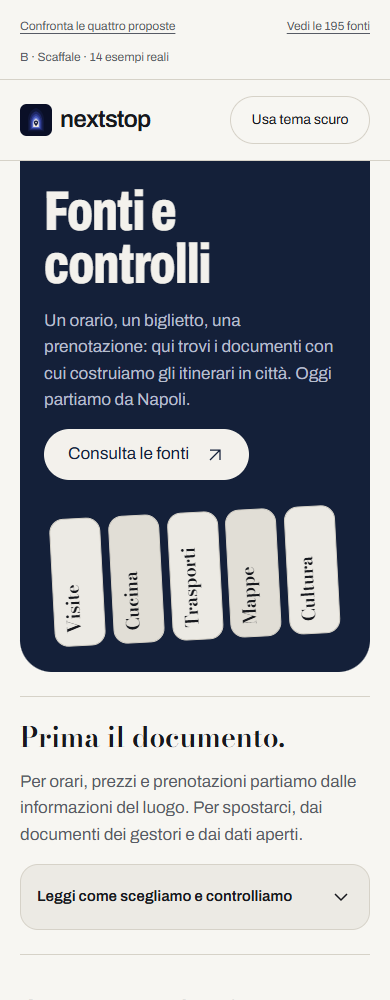
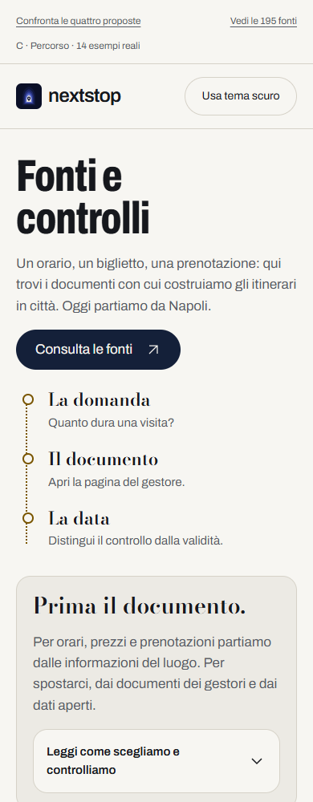
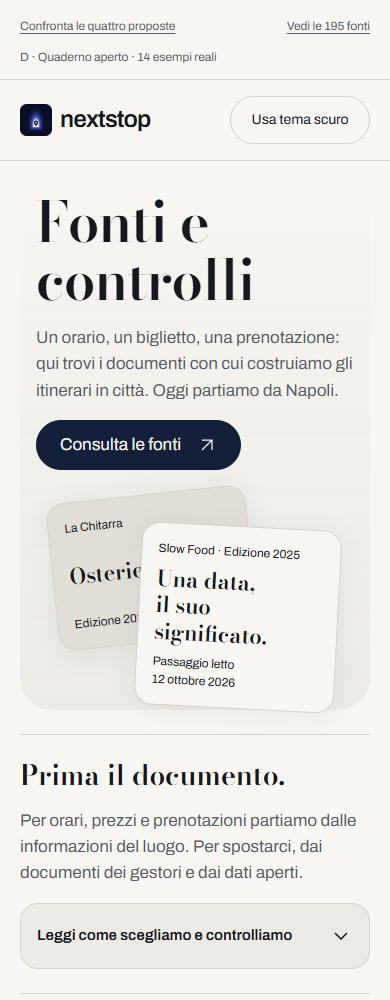

A · Atlante

Apri AtlanteProva il registro di 195 fontiBlocco 4 · Pagina generale, coordinata con la D approvata. Prototipi locali, senza integrazione nel sito.

Apri AtlanteProva il registro di 195 fonti
Apri ScaffaleProva il registro di 195 fonti
Apri PercorsoProva il registro di 195 fonti
Apri Quaderno apertoProva il registro di 195 fontiLa D del pannello a fondo pagina resta nel giro 4 approvato.